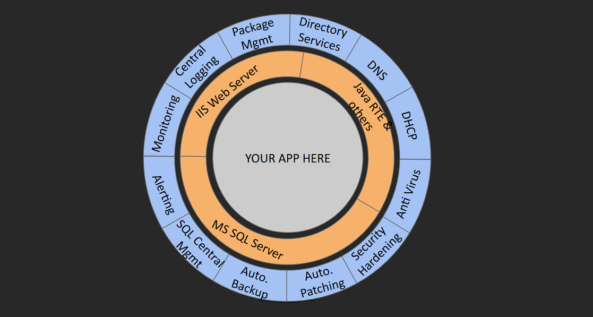

class: center, middle, inverse # Pets and Free Range Cattle .footnote[ created with [remark](http://github.com/gnab/remark) ] --- # About the project A platform for hosting corporate / enterprise infrastructure - The project started in 2017 - I joined the project team in 2018 - We are a really small team Tom Clark presented about this back in 2017: https://www.youtube.com/watch?v=evZoLB3nlO4 This presentation content: https://github.com/indented-automation/PetsAndFreeRangeCattle --- # The platform provides  --- # Boundaries - The platform is split into ecosystems (production, and development) - Ecosystems are split into tenants - A tenant is a configuration boundary --- # Automate everything? --- # XKCD --- # Automated things - Operating system configuration - Service deployment - Monitoring stack - Hardening - Network security - Patching and maintenance tasks --- # The things we use ## Tools - Puppet - Chocolatey - DSC resources - Jenkins ## Languages - PowerShell - Ruby - Puppet --- ## DSC resources - Describes single configuration items - Lots of bespoke modules - Class-based resources --- ## Puppet - Puppet modules: A abstract set of components - Puppet profiles: Other modules, a few CIs - Puppet roles: A small collection of profiles All resources, modules, and profiles are versioned. --- ## Chocolatey - Private curated repository - Application installers - PowerShell module installers All packages are versioned when installed. We never used "latest". --- # About Puppet - Puppet is used to configure just about everything - Puppet uses Hiera to store some configuration - Puppet modules and profiles define reasonable defaults, hiera overrides --- ## About the base role Defined configuration for: - Base profile - Trusted certificates - Common application packages - chocolatey repositories - Windows Remoting - Networking - WSUS client - Monitoring - Antivirus - CIS benchmarks --- ## The role of facts Nodes are created with facts. Facts describe what a node does. - ipc app and svc role: IP configuration server (aka DHCP) - ads app and dcm role: The first DC in the resource forest - nug app and svr role: A nuget repository App and Role determine which Puppet profile is run. --- ## Deployed core services - Active Directory resource forest - DHCP (on-premise only) - SQL servers - Nuget feeds - WSUS --- ## Before we can deploy anything... - The starting point is an empty VLAN with a gateway - Deploy a bootstrap node - Initial DHCP and DNS service - Initial package feed - Deploy Active Directory - Deploy DHCP --- # About Active Directory - Deployed as a small resource forest - Uses eventual convergence - Puppet manages domain principals, delegation, DHCP authorization, etc --- # About DHCP - Deployed in failover pairs - Puppet configures static addressing - AD grants each server access to the other - Failover pairs are formed by the master - Takes over from the bootstrap service --- # Multi-server services Configuration as code in Puppet is node-centric. A simple discovery process allows us to form groups of servers. - Client-driven enrollment - Writes an attribute on the computer account - Used by DHCP to create failover pairs - Used by Nexus to replicate packages --- ## Using our service discovery in Puppet Nodes must register themselves against a service. ```puppet dsc { 'service_discovery_registration': resource_name => 'ADTsdNode', module => 'ITV.PS.ADTsd', properties => { 'Ensure' => 'Present', 'Name' => downcase($service_name), }, require => Package['ITV.PS.ADTsd'] } ``` --- ## Master changes if a server goes offline - It just uses ping - Taking over the master role is configurable - Puppet uses the role to make descisions about resources to run --- # Monitoring - Alerting using Sensu - Metrics using Telegraf, InfluxDB, and Grafana - Logging using ELK --- ## Defining monitoring - Standard things apply to all nodes - Puppet state - Common services - Antivirus - Patching - Many, many performance counters and logs - Service specific checks, if the service is installed: - Active Directory - SQL - IIS - DHCP - Service specific performance counters and logs --- ## Services to monitor are auto-discovered Puppet Facts are created: ```ruby Facter.add('services') do confine :osfamily => "Windows" setcode do require 'win32ole' service_info = { 'dnsserver' => false, 'dhcpserver' => false, 'w3svc' => false } wmi = WIN32OLE.connect("winmgmts://") services = wmi.ExecQuery("SELECT Name FROM Win32_Service WHERE Name='dhcpserver' OR Name='dnsserver' OR Name='w3svc'") services.each { |service| if service_info.has_key?(service.Name.downcase) service_info[service.Name.downcase] = true end } service_info end end ``` --- ## Facts are used to create alerts ```puppet 'check_iis_w3svc_service' => { 'command' => 'check-winwmi_service.rb.bat -n w3svc', 'interval' => 900, }, 'check_iis_sites' => { 'command' => 'check-winiis_website.rb.bat', 'interval' => 300, }, 'check_iis_apppools' => { 'command' => 'check-winiis_apppool.rb.bat', 'interval' => 300, }, ``` --- # CIS benchmark - Applied using Puppet - Individual settings can be overridden using Hiera - Provides benchmarks for 2012 R2 and 2016. 2019 is queued for development. --- ## The policies - Each policy is defined with metadata - The module describes the policies as defined by CIS ```puppet 'SeDenyNetworkLogonRight' => { description => 'Deny access to this computer from the network', section => { '2012 R2' => '2.2.17', '2016' => '2.2.17', }, scored => true, value => $server_role ? { 'Domain Controller' => [ 'Guests', 'Local account' ], 'Member Server' => [ 'Guests', 'Local account', 'Administrators' ], } }, ``` --- ## Overriding policies Policies may be individually overridden usin hiera. ```yaml cis: user_rights_assignment: SeDenyNetworkLogonRight: - Guests ``` --- # Network security - On-premise: - Micro-segmented, in and out - Stored in yaml format - Idempotent Cloud services use a different approach. --- ## Defining rules Rules are defined in YAML documents. Documents are layered and merged. A rule set is a simple declaration of rules under a rule key: ``` rule: ANYECO_ADS_IN: source: - any-eco - any-remote destination: ads service: ads ``` Layered documents are merged. --- # Patching - Run monthly - Maintenance windows are managed via puppet - Just a scheduled task in the end --- # The end - Automate as much as we reasonably can - Continually expand our platform offerings - Continually re-evaluate our tools - Refine our approaches to development and testing